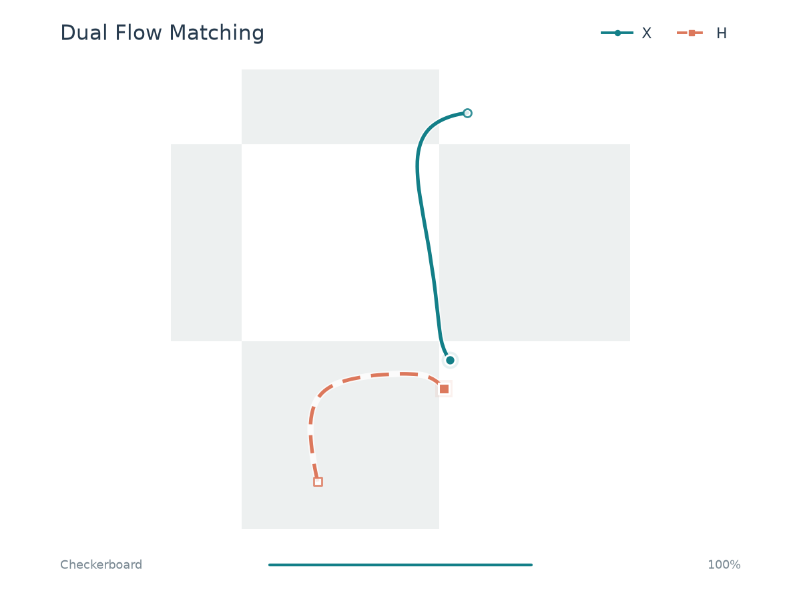

Dual Flow Matching
Learning Coupled Flows from Paired Views of a Shared Target
* Equal contribution
One target. Two coupled flows.
Two noisy views of one target, evolved together by a shared network.
Paired trajectories
X flow
H flow
